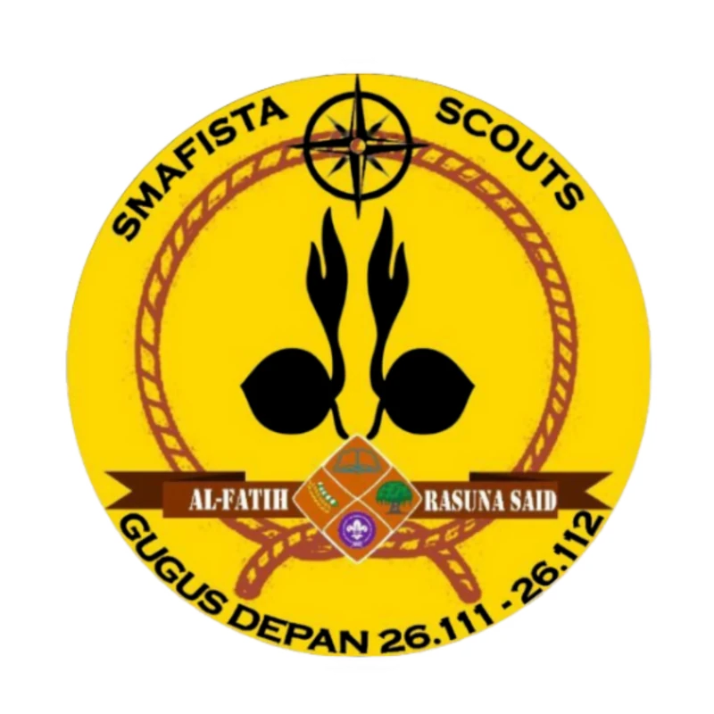
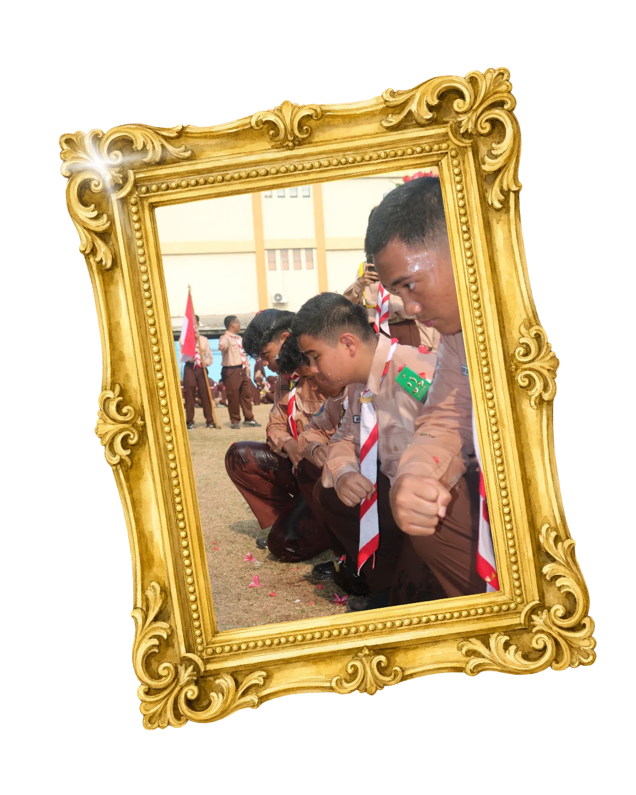

Pangkalan
SMA Al-Fityan School Tangerang
Tentang sekolah
Ketuk di mana saja untuk melewati animasi
Gerakan Pramuka · SMA Al-Fityan School Tangerang
Gugus Depan 26.111–26.112
“Satyaku Kudharmakan, Dharmaku Kubaktikan.”
Satu gugus depan, dua ambalan, satu semangat untuk bertumbuh, berkarya, dan mengabdi.

Prasmafista adalah wadah kegiatan kepramukaan tingkat SMA di Al-Fityan School Tangerang. Di sini, janji dan nilai Dasa Darma tidak berhenti sebagai hafalan, tetapi diupayakan hadir dalam sikap, keterampilan, kerja sama, dan pengabdian sehari-hari.
SMA Al-Fityan School Tangerang
Tentang sekolah26.111 / 26.112
Nomor putra dan putri dalam satu identitas Prasmafista.
Al-Fatih untuk putra dan Rasuna Said untuk putri.
Lihat strukturGerakan Pramuka adalah organisasi pendidikan nonformal yang menyelenggarakan pendidikan kepanduan di Indonesia. Kata Pramuka merupakan singkatan dari Praja Muda Karana, yang berarti “orang muda yang suka berkarya”. Pembinaannya mengembangkan karakter, kecakapan hidup, kedisiplinan, kepedulian, serta tanggung jawab.
Rujukan Kwartir NasionalGugus Depan atau Gudep merupakan satuan organisasi terdepan yang menyelenggarakan pendidikan kepramukaan dan menjadi wadah berhimpun peserta didik. Dalam Prasmafista, identitas pangkalan ditampilkan melalui nomor 26.111–26.112 dan dua ambalan Penegak yang disebut di atas.
Baca AD/ART Gerakan PramukaAmbalan adalah satuan gerak untuk golongan Pramuka Penegak yang menghimpun beberapa sangga. Ambalan dipimpin oleh Pradana dengan pendampingan Pembina Ambalan. Golongan Penegak dalam pembagian anggota Gerakan Pramuka umumnya berada pada rentang usia 16–20 tahun. Kegiatannya menjadi ruang latihan kepemimpinan, musyawarah, kecakapan, dan pengabdian.
Rujukan istilah kepramukaanInformasi identitas Prasmafista pada halaman ini mengikuti keterangan yang diberikan pengelola. Penjelasan istilah kepramukaan dirujuk dari sumber resmi Gerakan Pramuka.
Visi dan misi Dewan Ambalan Al-Fatih dan Rasuna Said menjadi arah bersama dalam membangun karakter, kepemimpinan, prestasi, dan pengabdian yang berlandaskan nilai kepramukaan.
Mewujudkan Ambalan yang aktif, berkarakter, berprestasi, serta menjunjung tinggi nilai-nilai Tri Satya dan Dasa Darma Pramuka guna membentuk anggota yang mandiri, disiplin, dan bertanggung jawab.
Meningkatkan kedisiplinan, rasa tanggung jawab, dan kepemimpinan anggota ambalan melalui kegiatan kepramukaan yang terarah dan berkesinambungan.
Menjaga nama baik ambalan serta meningkatkan prestasi di tingkat sekolah maupun luar sekolah.
Menumbuhkan rasa persaudaraan, kekompakan, dan kerja sama antaranggota ambalan.
Membuat kegiatan ambalan yang aktif, kreatif, dan inovatif sehingga mampu meningkatkan partisipasi seluruh anggota.
Menjadikan ambalan sebagai wadah pembinaan karakter yang berlandaskan sikap religius, nasionalisme, dan kepedulian sosial.
Mewujudkan Ambalan sebagai wadah pembinaan Pramuka Penegak yang aktif, solid, dan berkarakter, dengan menumbuhkan jiwa kepemimpinan, tanggung jawab, serta kepedulian sosial, berlandaskan nilai Tri Satya dan Dasa Dharma, sehingga tercipta Ambalan yang berprestasi, harmonis, dan berkelanjutan.
Menguatkan karakter dan kepemimpinan anggota Ambalan melalui kegiatan kepramukaan yang disiplin, terarah, dan berkesinambungan.
Meningkatkan keaktifan, kebersamaan, dan solidaritas anggota Ambalan dengan menciptakan lingkungan yang nyaman, inklusif, dan saling mendukung.
Mengembangkan potensi dan prestasi Ambalan baik di bidang kepramukaan, maupun organisasi lainnya, agar Ambalan mampu berperan aktif di dalam dan luar sekolah.
“Satyaku Kudharmakan, Dharmaku Kubaktikan.”
Semboyan PrasmafistaKenali Dewan Ambalan Al-Fatih dan Rasuna Said beserta susunan jabatan dan anggota yang telah disampaikan. Nama yang masih bertanda “belum diisi” menunggu data resmi.
Gudep 26.111
Gudep 26.112
Susunan jabatan mengikuti data yang disampaikan. Foto pengurus belum ditambahkan, dan nama yang belum tersedia ditandai secara terbuka agar tidak ada informasi yang dibuat-buat.
Sedikit potret untuk membuka cerita. Ketuk foto untuk melihatnya lebih besar.
Pembaruan resmi dibagikan melalui akun Instagram Prasmafista.